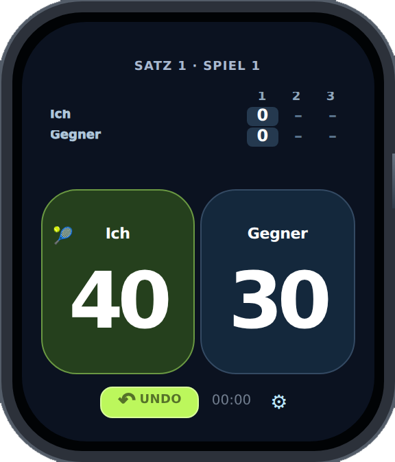
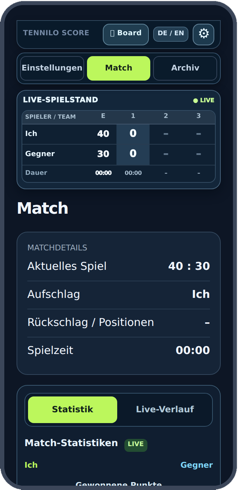
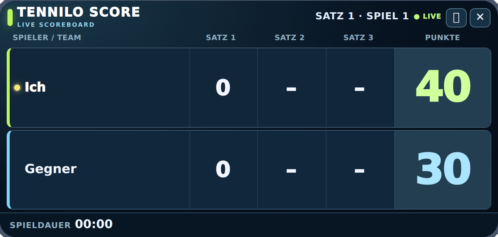
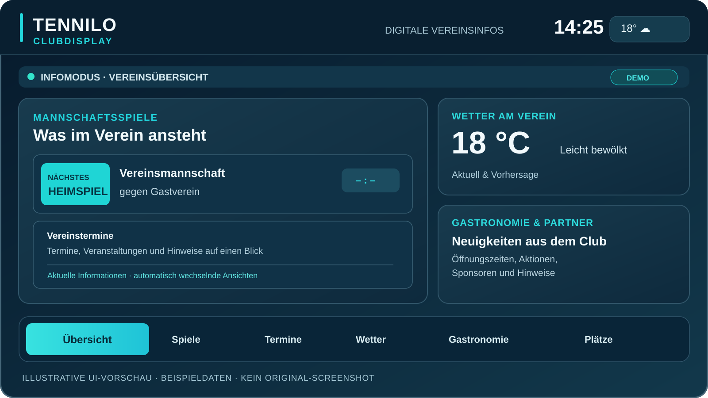

Punkte direkt erfassen
Aufschlag, Punkte und UNDO am Handgelenk – mit großen Bedienelementen für den Platz.
Auf dem Platz schnell und intuitiv zählen. Im Verein Informationen übersichtlich zeigen. Unter der Dachmarke TENNILO entstehen Lösungen, die den Tennisalltag erleichtern sollen. Hier gibt es Einblicke in die Entwicklung und direkte Links zu den jeweiligen Produktseiten.
Die Zähl-App für Apple Watch und iPhone. Während des Matches soll die Punkteingabe am Handgelenk schnell und unkompliziert funktionieren. Das iPhone ergänzt die Steuerung um Spielstand, Verlauf und Matchdaten.
Im interaktiven Prototyp sind unter anderem die Watch-Bedienung, Matchansicht, Statistik, Spielverlauf und ein übersichtliches Scoreboard zu sehen. Die Abbildungen zeigen den Entwicklungsstand, keine fertig veröffentlichte App.
Nächster Schritt: geplanter Betatest am 27. Dezember 2026 beim LK-Turnier in Bad Saarow. Eine Apple Watch ist Voraussetzung; Tester erhalten die App bei Marktreife kostenlos. Geplanter Marktstart: Frühjahr 2027.


Aufschlag, Punkte und UNDO am Handgelenk – mit großen Bedienelementen für den Platz.
Sätze, Spiele und aktuelle Punkte in der iPhone-Ansicht auf einen Blick.
Live-Spielverlauf, Matchstatistiken und Match-Archiv als Teil des Produktkonzepts.
Große Querformat-Anzeige für den Spielstand, zusätzlich zur normalen Matchansicht.
Echte Bildschirmaufnahmen aus dem aktuellen interaktiven Browser-Prototyp mit Beispieldaten. Bilder anklicken zum Vergrößern.

Hinweis: Der Funktionsumfang kann sich bis zur Veröffentlichung verändern. Die Screenshots stammen aus einer Demo mit Beispieldaten.
BASIC: die automatische digitale Infotafel. PLUS: das interaktive Vereinsterminal. BASIC umfasst Punktspiele, Ergebnisse, Termine, News, aktuelles Wetter, Sponsoren und Gastronomie. PLUS ergänzt Touch-Navigation, Sprachwechsel, TENNILO SmartDisplay, Wetterdetails, Spielpartnerbörse, Newsletter und Buchungsanbindung nach Freigabe.
Beim NTC 93 wird der Einsatz als Pilot vorbereitet und erprobt. Die Produktdemo zeigt das Konzept. Die Anbindung echter Platzbuchungen und die Darstellung personenbezogener Belegungsdaten hängen von der Freigabe des jeweiligen Buchungssystems und von Datenschutzprüfungen ab.
Für einen reinen Infobildschirm reicht ein Bildschirm mit aktuellem Browser; für die interaktive Bedienung wird ein Touchscreen benötigt. Für den regulären Betrieb sind außerdem Strom, stabile Internetverbindung und eine geeignete Gerätekonfiguration erforderlich.

UI-Illustration mit Beispieldaten · echte Oberfläche in der Live-Demo
Öffentliche Mannschaftsbegegnungen, Ergebnisse und Veranstaltungstermine übersichtlich darstellen.
BASIC: automatische Infoseiten; Sprache und Wechselzeit werden im Backend eingestellt. PLUS: manuelle Steuerung, Pause und Sprachwechsel am Display.
BASIC: aktuelles Wetter, Partner und reguläre Öffnungszeiten. PLUS: Wetterdetails, Radar, Animationen, Aktionen und Sonderöffnungszeiten.
Touch-Buchungsansicht bei passender Anbieterfreigabe; die allgemeine Integration ist noch in Prüfung.
Eine beschriftete Illustration verdeutlicht die Bildschirmaufteilung. Für den tatsächlichen Entwicklungsstand bitte die interaktive Demo öffnen.
190 € / Jahr · Abo-Einrichtung 149 €. Alternativ 699 € einmalig inkl. Einrichtung und 24 Monaten Updates und Support.
390 € / Jahr · Abo-Einrichtung 299 €. Alternativ 1.399 € einmalig inkl. Einrichtung und 24 Monaten Updates und Support.
Freiwillige Verlängerung für 12 oder 24 Monate. Zusatzdisplay 9 € monatlich, 90 € jährlich oder 249 € einmalig. Alle Preise und Bedingungen.
Status: NTC-Pilot im Vereinsbetrieb (Stand November 2026). Unverbindliche Softwarepreise bei vereinseigenem Hosting; Hardware, Hosting und Fremdlizenzen separat. Vollständiger Vergleich auf der TENNILO-Produktseite.

Mit TENNILO Founders ist ein Crowdfunding auf Startnext geplant. Unterstützt werden sollen die Weiterentwicklung und Erprobung der gesamten TENNILO-Produktfamilie: Score, Tournament, Umpire und ClubDisplay. Es geht nicht um Unternehmensanteile oder Rendite.
Aktuell läuft die öffentliche Startphase. Auf der offiziellen Founders-Seite gibt es Informationen zu Zielen, geplanten Unterstützerpaketen und die Möglichkeit, sich kostenlos und unverbindlich für Updates anzumelden.
Score und ClubDisplay sind zwei Bausteine der TENNILO-Produktfamilie. Weitere Ideen wie Tournament und Umpire werden auf der TENNILO-Seite vorgestellt.